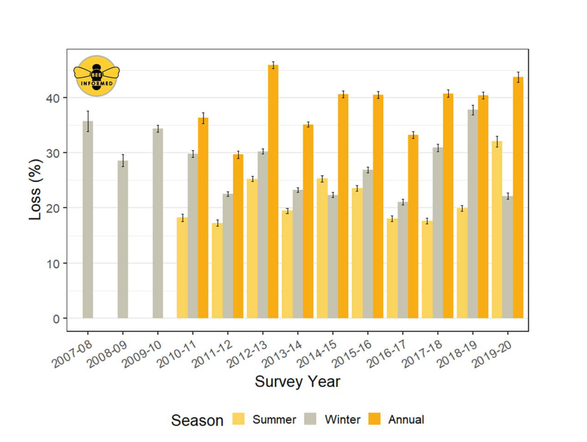

Bee loss in North America
Reading time: 3 minutes

Wild pollinators are an integral part of native plant communities and are highly effective at pollinating flowers in natural ecosystems. Plant pollination is essential for plant reproduction, which in turn provides fruits and seeds for wildlife. Abundance and diversity of pollinators ensure a stable, highly productive ecosystem.
Changing environmental conditions caused by weather, climate change, or human interventions, may disrupt pollinator activity for some species but enhance it for others. Within natural ecosystems, biodiversity and abundance of wild bee populations and other non-bee pollinators provides redundancy that ensures ongoing pollination and plant productivity despite a changing environment.
Managed pollinators, most commonly honey bees, are super-generalist pollinators that are essential for, or enhance, the pollination and production of many agricultural crops. We rely heavily on honey bees for certain types of food production - for example they are considered essential to sustaining the global supply of almonds - and support billions of dollars worth of food production worldwide. So, it is very worrying that beekeepers report honeybee populations are dwindling, and that their colonies are becoming increasingly vulnerable to environmental stressors.

Alongside honey bees, wild pollinators including bumble bees (genus Bombus), other types of bees, wasps, and other non-bee species also make important contributions to crop production. Interestingly, on organic farms near natural habitat, wild bees can provide full pollinator services and, as long as diversity is maintained, there is sustained success.1
It seems possible then that by making adjustments that favour abundance and diversity of wild pollinators we could build capacity and resilience within natural and agricultural ecosystems that offset shortfalls in managed pollinator services resulting from the ongoing, perplexing losses of managed colonies.
Bumble bee species in flux in British Columbia
Decline of bumble bees has been reported in North America and Europe and is of significant global concern.2 Although there are over 500 known bee species in British Columbia, there is not a lot of historical information about pollinator populations to use as a baseline. However, we do know that at least one bee species, the western bumble bee, B. occidentalis, has significantly declined.3 The authors discuss how this bee used to be very common in the lower mainland in the 1980s, representing 25-30% of bumble bee species collected on local berry farms, but by 2003/2004 had dwindled to less than 1% of the bees collected. Since then, B. occidentalis was sighted just a handful of times on Vancouver Island in 2012, and once in the lower mainland at Boundary Bay in 2013. According to a local newspaper report, it was last spotted on Galiano in 1990. In contrast however, it seems the yellow-faced bumble bee, B. vosnesenskii, may be gaining ground in the region.4
Galiano’s bumble bees have recently been under scrutiny in a study to better understand their reliance on habitat diversity in this semi-arid ecosystem 5. The author identified six species of bumble bees that frequented flowering shrubs in various habitats through spring and summer, and saw fluctuations of bumble bee abundance in different habitats (wet, dry, modified, natural) as the summer progressed. Overall, the Vancouver bumble bee B. vancouverensis was the most abundant species, followed by the Sitka bumble bee B. sitkensis, while the yellow-faced bumble bee B. vosnesenskii was least abundant, perhaps reflecting it has only recently made it to the island. Bumble bee activity and blooming peaked in June in habitat similar to our study site, but even as flowering slowed high numbers of bumble bees were found to persist through July.
References
Footnotes
Kremen C, Williams NM, Thorp RW. Crop pollination from native bees at risk from agricultural intensification. Proceedings of the National Academy of Sciences. 2002;99(26):16812-6. https://doi.org/10.1073/pnas.262413599↩︎
Soroye P, Newbold T, Kerr J. Climate change contributes to widespread declines among bumble bees across continents. Science. 2020;367(6478):685-8. http://doi.org/10.1126/science.aax8591↩︎
Wray J & Elle E. Simon Fraser University. Wild and managed pollinators: current status and strategies to increase diversity. https://www.sfu.ca/content/dam/sfu/people/eelle/elle_bee_info/Metro_Vancouver_report.pdf Accessed 28 March, 2021.↩︎
FRASER, David Frank et al. Changes in the Status and Distribution of the Yellow-faced Bumble Bee. Journal of the Entomological Society of British Columbia, [S.l.], v. 109, p. 31-37, may 2013. ISSN 1929-7890. Available at: https://journal.entsocbc.ca/index.php/journal/article/view/261. Accessed 13 Apr 2021.↩︎
Simon A. Water into nectar: The effects of seasonal drought on bumble bee and flowering plant communities. MSc Thesis, University of Victoria, 2020. Available at https://dspace.library.uvic.ca/handle/1828/11837↩︎